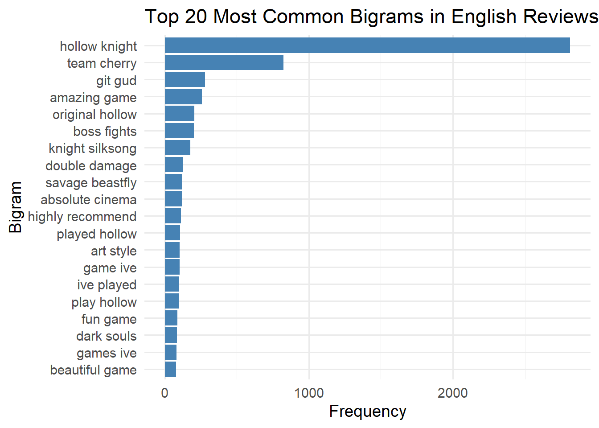
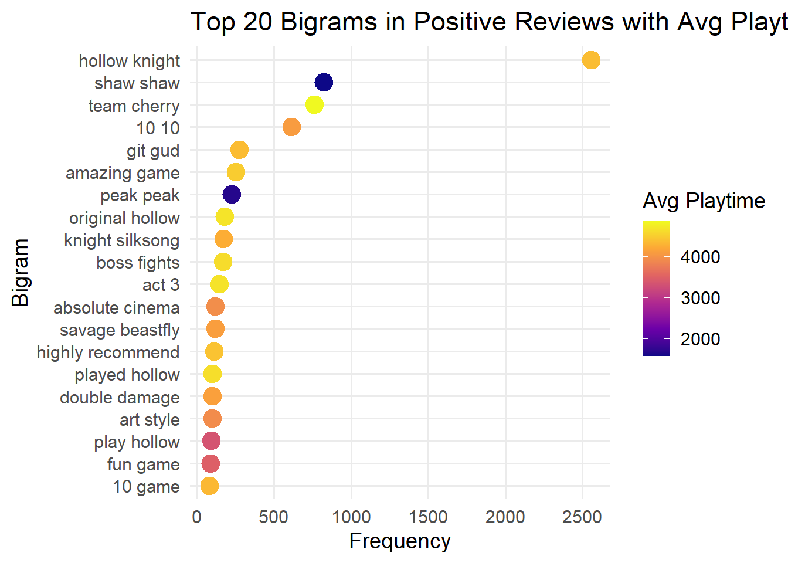
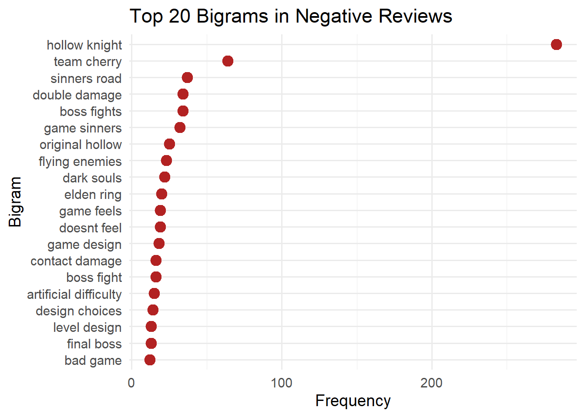
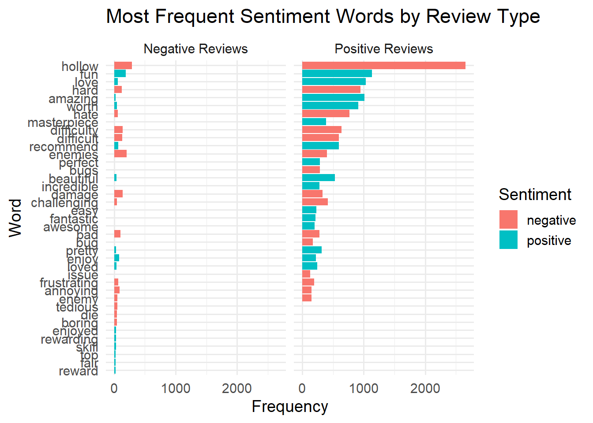
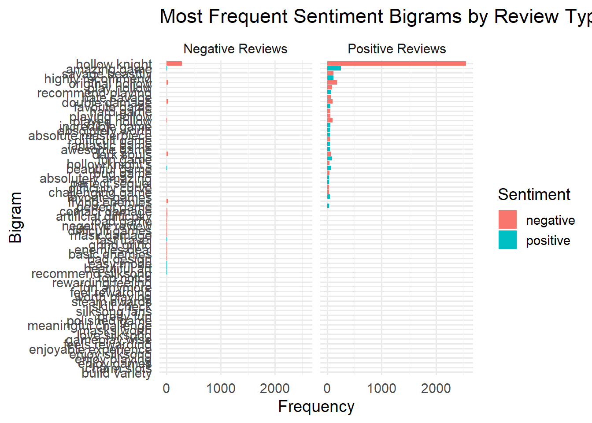
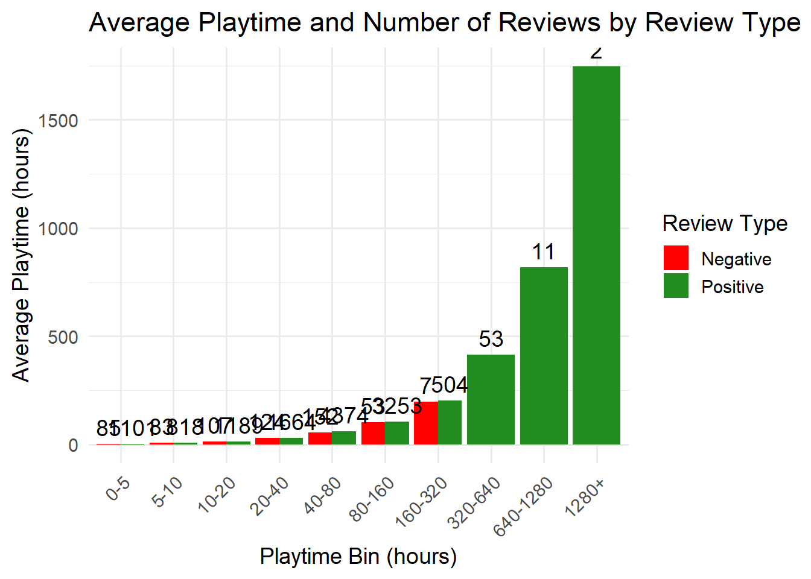

library(tidyverse)
library(lubridate)
library(tidytext)
library(viridis)
library(forcats)
library(dplyr)Player Perception and Engagement in Hollow Knight: Silksong
1. Introduction
This project analyzes player perception and engagement in Hollow Knight: Silksong using Steam user reviews. The analysis focuses on how player experience and reviewer behavior relate to perceived difficulty, sentiment consistency, gameplay mechanics appreciation, and community feedback.
Only English-language reviews are considered to ensure consistency in text-based analysis.
2. Data Source
The dataset consists of publicly available Steam reviews collected using a third-party tool interfacing with Steam review data. Each observation represents a single user review and includes playtime information, recommendation status, and community feedback metrics.
No private or personally identifiable information is used.
3. Libraries
4. Data Loading
df_raw <- read_csv(
"silksong_reviews.csv",
show_col_types = FALSE
)
dim(df_raw)[1] 37099 22The raw dataset contains approximately 37,000 reviews with 22 variables.
Column Renaming
Some variables use slash-separated names that complicate manipulation in R. These columns are renamed once to improve readability and maintainability.
df <- df_raw %>%
rename(
author_steamid = `author/steamid`,
playtime_at_review = `author/playtime_at_review`,
playtime_forever = `author/playtime_forever`,
playtime_last_two_weeks = `author/playtime_last_two_weeks`,
num_games_owned = `author/num_games_owned`,
num_reviews = `author/num_reviews`,
last_played = `author/last_played`
)
colnames(df) [1] "author/deck_playtime_at_review" "last_played"
[3] "num_games_owned" "num_reviews"
[5] "playtime_at_review" "playtime_forever"
[7] "playtime_last_two_weeks" "author_steamid"
[9] "comment_count" "language"
[11] "primarily_steam_deck" "received_for_free"
[13] "recommendationid" "review"
[15] "steam_purchase" "timestamp_created"
[17] "timestamp_updated" "voted_up"
[19] "votes_funny" "votes_up"
[21] "weighted_vote_score" "written_during_early_access" 6. Language Filtering
To ensure consistency in text analysis, only English-language reviews are retained.
df_en <- df %>%
filter(language == "english")
nrow(df_en)[1] 13580After filtering, the dataset contains 13,580 English-language reviews.
7. Timestamp and Playtime Cleaning
Unix timestamps are converted to date-time format. Missing playtime values are replaced with zero.
df_en <- df_en %>%
mutate(
timestamp_created = as_datetime(timestamp_created),
timestamp_updated = as_datetime(timestamp_updated),
last_played = as_datetime(last_played),
playtime_at_review = replace_na(playtime_at_review, 0),
playtime_forever = replace_na(playtime_forever, 0),
playtime_last_two_weeks = replace_na(playtime_last_two_weeks, 0)
)8. Exploratory Playtime Summary
summary(df_en$playtime_at_review) Min. 1st Qu. Median Mean 3rd Qu. Max.
5 1204 3323 3738 5117 123711 The distribution of playtime at review is right-skewed, with a small number of very high-playtime users.
9. Column Selection for Analysis
Only variables relevant to the research objectives are retained.
df_en <- df_en %>%
select(
review,
voted_up,
playtime_at_review,
playtime_forever,
playtime_last_two_weeks,
num_games_owned,
num_reviews,
votes_up,
votes_funny,
weighted_vote_score,
steam_purchase,
received_for_free,
written_during_early_access,
timestamp_created
)
glimpse(df_en)Rows: 13,580
Columns: 14
$ review <chr> "Beat a boss/area and I don't even feel go…
$ voted_up <lgl> FALSE, TRUE, TRUE, TRUE, TRUE, TRUE, TRUE,…
$ playtime_at_review <dbl> 1469, 976, 2089, 893, 385, 2583, 696, 1412…
$ playtime_forever <dbl> 1469, 976, 2089, 893, 385, 2583, 718, 1443…
$ playtime_last_two_weeks <dbl> 1469, 976, 2108, 893, 385, 2583, 718, 805,…
$ num_games_owned <dbl> 78, 0, 4, 0, 0, 169, 0, 116, 0, 97, 0, 213…
$ num_reviews <dbl> 18, 18, 1, 1, 2, 14, 1, 4, 1, 24, 1, 15, 1…
$ votes_up <dbl> 0, 0, 0, 0, 0, 0, 0, 0, 0, 0, 0, 0, 1, 0, …
$ votes_funny <dbl> 0, 0, 0, 0, 0, 0, 0, 0, 0, 0, 0, 0, 0, 0, …
$ weighted_vote_score <dbl> 0.5000000, 0.5000000, 0.5000000, 0.5000000…
$ steam_purchase <lgl> TRUE, TRUE, TRUE, TRUE, FALSE, FALSE, TRUE…
$ received_for_free <lgl> FALSE, FALSE, FALSE, FALSE, FALSE, FALSE, …
$ written_during_early_access <lgl> FALSE, FALSE, FALSE, FALSE, FALSE, FALSE, …
$ timestamp_created <dttm> 2026-01-06 20:52:54, 2026-01-06 20:44:34,…At this stage, the dataset is fully cleaned and structured for analysis.
10. Planned Analyses
The following analyses will be conducted:
- Relationship between perceived difficulty and player experience.
- Consistency between textual sentiment and recommendation outcome.
- Identification of gameplay mechanics associated with positive reviews.
- Effect of reviewer experience on community feedback.
11. Current Status
The dataset is cleaned, restricted to English-language reviews, normalized for playtime, and ready for text-based and statistical analysis.
12. Text Preprocessing
df_text <- df_en %>%
mutate(
review = str_to_lower(review),
review = str_replace_all(review, "[^a-z\\s]", "")
)13. Exploratory Text Analysis
Step 1: Preprocessing
# Tokenize into words
df_tokens <- df_text %>%
select(review, voted_up) %>%
unnest_tokens(word, review) %>%
filter(!word %in% stop_words$word)Step 2: Most Frequent Words
Get the most frequent words overall:
word_counts <- df_tokens %>%
count(word, sort = TRUE)
word_counts %>% slice(1:20) # top 20 words# A tibble: 20 × 2
word n
<chr> <int>
1 game 10785
2 hollow 2950
3 knight 2937
4 silksong 2002
5 shaw 1442
6 buy 1371
7 fun 1324
8 time 1264
9 play 1199
10 games 1130
11 love 1091
12 boss 1079
13 hard 1069
14 amazing 1039
15 bosses 1006
16 peak 989
17 worth 958
18 team 900
19 played 888
20 im 885Step 3: Most Frequent Bigrams
# Create bigrams
df_bigrams <- df_text %>%
unnest_tokens(bigram, review, token = "ngrams", n = 2) stop_words_list <- stop_words$word
df_bigrams_clean <- df_bigrams %>%
separate(bigram, into = c("word1", "word2"), sep = " ") %>%
filter(!word1 %in% stop_words_list, !word2 %in% stop_words_list) %>%
unite(bigram, word1, word2, sep = " ")
bigram_counts <- df_bigrams_clean %>%
count(bigram, sort = TRUE)
bigram_counts %>% slice(1:20)# A tibble: 20 × 2
bigram n
<chr> <int>
1 hollow knight 2815
2 NA NA 2598
3 team cherry 823
4 shaw shaw 822
5 git gud 279
6 amazing game 259
7 peak peak 226
8 original hollow 204
9 boss fights 203
10 knight silksong 178
11 double damage 129
12 savage beastfly 120
13 absolute cinema 119
14 highly recommend 112
15 played hollow 107
16 art style 104
17 game ive 102
18 ive played 101
19 play hollow 96
20 fun game 88# Remove literal "NA NA" bigrams
top_bigrams <- bigram_counts %>%
filter(bigram != "NA NA") %>% # remove bad bigrams
slice(1:20)
top_bigrams <- bigram_counts %>%
filter(!str_detect(bigram, "^([a-z]+) \\1$")) %>% # remove repeated words
filter(bigram != "NA NA") %>%
slice(1:20)# Plot
ggplot(top_bigrams, aes(x = reorder(bigram, n), y = n)) +
geom_col(fill = "steelblue") +
coord_flip() +
labs(
title = "Top 20 Most Common Bigrams in English Reviews",
x = "Bigram",
y = "Frequency"
) +
theme_minimal(base_size = 14)
Step 4 : Reviews based on recommendation
- Goal: Quickly visualize dominant words in reviews.
- Bonus: Separate for positive vs. negative recommendations.
Step 4a: Tokenize into words with voted_up kept
df_tokens <- df_text %>%
select(review, voted_up) %>% # keep recommendation
unnest_tokens(word, review) %>%
filter(!word %in% stop_words$word)Step 4b: Create bigrams with voted_up
df_bigrams <- df_text %>%
select(review, voted_up) %>%
unnest_tokens(bigram, review, token = "ngrams", n = 2)
stop_words_list <- stop_words$word
df_bigrams_clean <- df_bigrams %>%
separate(bigram, into = c("word1", "word2"), sep = " ") %>%
filter(!word1 %in% stop_words_list,
!word2 %in% stop_words_list) %>%
unite(bigram, word1, word2, sep = " ")Step 4c: Split by positive and negative reviews
bigrams_pos <- df_bigrams_clean %>%
filter(voted_up == TRUE) %>%
count(bigram, sort = TRUE) %>%
filter(bigram != "NA NA")
bigrams_neg <- df_bigrams_clean %>%
filter(voted_up == FALSE) %>%
count(bigram, sort = TRUE) %>%
filter(bigram != "NA NA")Step 4d: Plot top 20 positive bigrams
# Add the review ID back (or row number) to track bigrams per review
df_en <- df_en %>% mutate(review_id = row_number())
# Tokenize bigrams and keep review_id
df_bigrams <- df_en %>%
select(review, review_id, voted_up, playtime_at_review) %>%
unnest_tokens(bigram, review, token = "ngrams", n = 2) %>%
filter(bigram != "NA NA")
# Remove stop words in bigrams
stop_words_list <- stop_words$word
df_bigrams_clean <- df_bigrams %>%
separate(bigram, into = c("word1", "word2"), sep = " ") %>%
filter(!word1 %in% stop_words_list, !word2 %in% stop_words_list) %>%
unite(bigram, word1, word2, sep = " ")
# Positive reviews
bigrams_pos <- df_bigrams_clean %>%
filter(voted_up == TRUE)
# Count frequency and compute average playtime per bigram
top_pos_bigrams <- bigrams_pos %>%
group_by(bigram) %>%
summarise(
freq = n(),
avg_playtime = mean(playtime_at_review),
.groups = "drop"
) %>%
arrange(desc(freq)) %>%
slice(1:20)
# Plot
ggplot(top_pos_bigrams, aes(x = reorder(bigram, freq), y = freq, color = avg_playtime)) +
geom_point(size = 5) +
coord_flip() +
scale_color_viridis_c(option = "C") +
labs(
title = "Top 20 Bigrams in Positive Reviews with Avg Playtime",
x = "Bigram",
y = "Frequency",
color = "Avg Playtime"
) +
theme_minimal(base_size = 14)
Step 4e: Plot top 20 negative bigrams
ggplot(bigrams_neg %>% slice(1:20),
aes(x = reorder(bigram, n), y = n)) +
geom_point(color = "firebrick", size = 4) +
coord_flip() +
labs(
title = "Top 20 Bigrams in Negative Reviews",
x = "Bigram",
y = "Frequency"
) +
theme_minimal(base_size = 14)
Step 5: Sentiment Analysis (Exploratory, not verdicts)
Step 5.1: Attach sentiment to tokens
# Load sentiment lexicon
bing_sentiments <- get_sentiments("bing")
df_tokens_sent <- df_tokens %>%
inner_join(bing_sentiments, by = "word")Step 5.2: Word frequency by sentiment AND review type
sentiment_word_counts <- df_tokens_sent %>%
group_by(voted_up, sentiment, word) %>%
summarise(n = n(), .groups = "drop")
top_sentiment_words <- sentiment_word_counts %>%
group_by(voted_up, sentiment) %>%
slice_max(n, n = 15) %>%
ungroup()Step 5.3: Plot — frequency by review type
ggplot(top_sentiment_words,
aes(x = reorder(word, n), y = n, fill = sentiment)) +
geom_col(show.legend = TRUE) +
coord_flip() +
facet_wrap(~ voted_up,
labeller = as_labeller(c(`TRUE` = "Positive Reviews",
`FALSE` = "Negative Reviews"))) +
labs(
title = "Most Frequent Sentiment Words by Review Type",
x = "Word",
y = "Frequency",
fill = "Sentiment"
) +
theme_minimal(base_size = 14)
bing <- get_sentiments("bing")
bigrams_separated <- df_bigrams_clean %>%
separate(bigram, into = c("word1", "word2"), sep = " ")
bigrams_with_sentiment <- bigrams_separated %>%
left_join(bing, by = c("word1" = "word")) %>%
rename(sentiment1 = sentiment) %>%
left_join(bing, by = c("word2" = "word")) %>%
rename(sentiment2 = sentiment)
bigrams_sentiment_final <- bigrams_with_sentiment %>%
mutate(
sentiment = case_when(
sentiment1 == sentiment2 ~ sentiment1,
is.na(sentiment1) & !is.na(sentiment2) ~ sentiment2,
!is.na(sentiment1) & is.na(sentiment2) ~ sentiment1,
TRUE ~ NA_character_
),
bigram = paste(word1, word2)
) %>%
filter(!is.na(sentiment))
top_sentiment_bigrams <- bigrams_sentiment_final %>%
group_by(voted_up, sentiment, bigram) %>%
summarise(n = n(), .groups = "drop") %>%
group_by(voted_up, sentiment) %>%
slice_max(n, n = 15) %>%
ungroup()ggplot(top_sentiment_bigrams,
aes(x = reorder(bigram, n), y = n, fill = sentiment)) +
geom_col(show.legend = TRUE) +
coord_flip() +
facet_wrap(
~ voted_up,
labeller = as_labeller(c(
`TRUE` = "Positive Reviews",
`FALSE` = "Negative Reviews"
))
) +
labs(
title = "Most Frequent Sentiment Bigrams by Review Type",
x = "Bigram",
y = "Frequency",
fill = "Sentiment"
) +
theme_minimal(base_size = 14)
library(ggplot2)
library(dplyr)
# Bin playtime (in hours)
df_en <- df_en %>%
mutate(playtime_hours = playtime_at_review / 60,
playtime_bin = cut(playtime_hours,
breaks = c(0, 5, 10, 20, 40, 80, 160, 320, 640, 1280, Inf),
labels = c("0-5", "5-10", "10-20", "20-40", "40-80",
"80-160", "160-320", "320-640", "640-1280", "1280+"),
include.lowest = TRUE))
# Aggregate for plotting
df_bin_summary <- df_en %>%
group_by(playtime_bin, voted_up) %>%
summarise(
avg_playtime = mean(playtime_hours),
n_reviews = n(),
.groups = "drop"
)
# Plot
ggplot(df_bin_summary, aes(x = playtime_bin, y = avg_playtime, fill = voted_up)) +
geom_col(position = "dodge") +
geom_text(aes(label = n_reviews), position = position_dodge(width = 0.9), vjust = -0.5) +
scale_fill_manual(values = c("red", "forestgreen"), labels = c("Negative", "Positive")) +
labs(
title = "Average Playtime and Number of Reviews by Review Type",
x = "Playtime Bin (hours)",
y = "Average Playtime (hours)",
fill = "Review Type"
) +
theme_minimal(base_size = 14) +
theme(axis.text.x = element_text(angle = 45, hjust = 1))